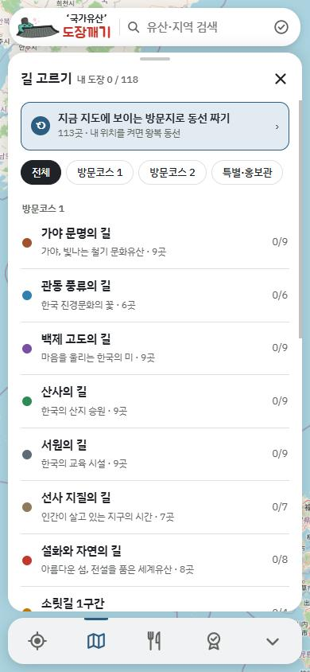
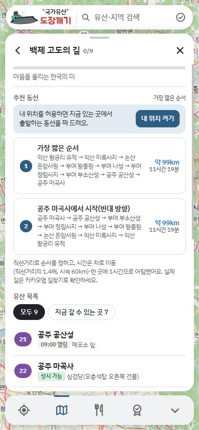
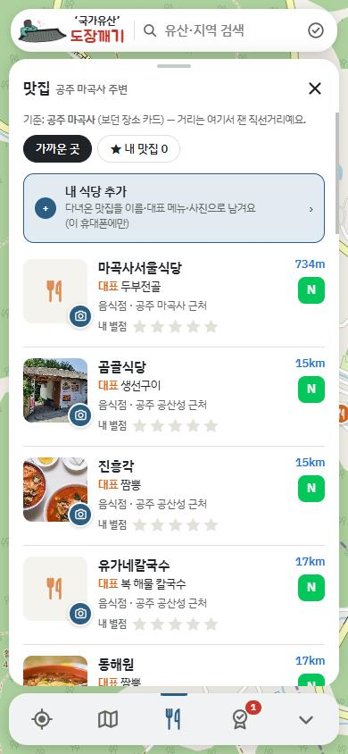
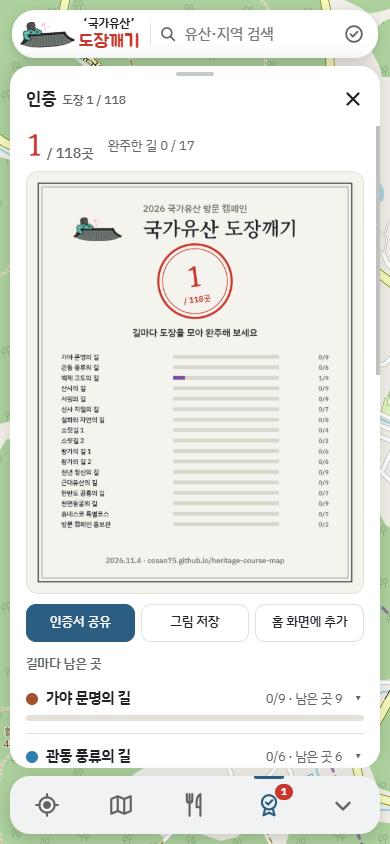

2026 국가유산 방문 캠페인 · 방문코스 지도
118곳 도장깨기,
지도 한 장으로
어디까지 왔는지, 다음엔 어디로 갈지, 근처에서 뭘 먹을지. 방문코스 17개 길을 지도 하나에 모았어요.
- 설치·가입 없이 브라우저에서
- 무료, 광고 없음
- 기록은 내 폰에만
여행 하루가 이 순서로 흘러가요
길을 고르고, 동선을 짜고, 도장을 찍고, 밥 먹고, 완주까지.
전국 방문코스를 지도 한 장에
길마다 색이 다른 핀으로 118곳이 한 번에 보여요. 유산 이름이나 지역을 검색하고, 내 위치를 켜면 가장 가까운 곳부터 알려 줘요.

길마다 몇 곳 남았는지
가야 문명의 길, 백제 고도의 길, 산사의 길… 길을 고르면 그 길의 유산만 지도에 남고, 받은 도장 수가 함께 보여요.

내 위치에서 가장 짧은 순서로
지금 있는 곳에서 출발해 길 안의 유산을 가장 짧게 도는 순서를 짜 줘요. 아직 도장을 안 받은 곳만 고를 수도 있고, 구간마다 카카오맵 길찾기로 바로 이어져요.
스탬프 자리까지 알려 주는 장소 카드
도장이 어느 건물에 있는지, 오늘 열었는지, 사진과 음성 해설까지 카드 한 장에 있어요. 근처 200m 안에 들어가면 도장 찍을 곳이라고 먼저 알려 줘요.

길 따라 삼시세끼
보고 있는 유산 주변 식당을 대표 메뉴와 함께 가까운 순으로 보여 줘요. 다녀온 곳엔 별점과 사진을 남겨 나만의 맛집 목록을 만들 수 있어요.

도장 모음 인증서
지금까지 모은 도장을 인증서 그림 한 장으로 만들어 저장하거나 가족·친구에게 공유해요. 길을 다 돌면 완주 도장이 쿵 찍혀요.
묻고 답하기
더 궁금한 건 의견 남기기로 알려 주세요.
여기서 도장을 찍으면 기념품을 받을 수 있나요?
아니요. 기념품은 종이 방문자 여권에 찍은 실물 도장으로 국가유산 방문 캠페인 공식 홈페이지에서 신청해요. 도장깨기는 어디까지 왔는지 기록하고 길을 안내하는 도우미예요.
회원가입이나 로그인이 필요한가요?
필요 없어요. 주소를 열면 바로 쓸 수 있어요.
도장 기록은 어디에 저장되나요?
쓰고 있는 휴대폰의 브라우저 안에만 저장돼요. 서버로 보내지 않아서 만든 사람도 볼 수 없어요. 그래서 브라우저 기록을 지우거나 다른 휴대폰으로 바꾸면 기록이 따라가지 않아요.
광고가 있나요?
없어요. 몇 명이 다녀갔는지만 개인정보 없이 세는 방문 통계(GoatCounter)를 써요.
운영 시간이나 도장 위치가 현장과 달라요.
공식 안내와 관광공사 자료를 바탕으로 만들었지만 현장 사정이 바뀔 수 있어요. 가기 전에 공식 홈페이지 공지를 함께 확인해 주시고, 틀린 곳은 의견 남기기로 알려 주시면 고칠게요.